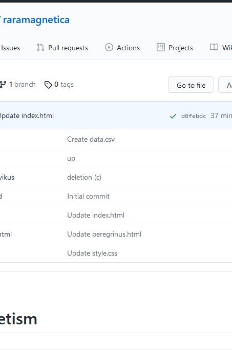

Credits
|  |
This
project could only be realized with the help of many hands. I would like to thank: Data entry and cleaning: Flavia Benfante, Claudia Burghof, Manon Gumpert, Verena Scheulen IT and coding: Mike Bennett, Robert Casties, Hassan El Hajj, Florian Kräutli, Martin Raspe, Jeffrey Witt Research: Mark Clark, Loris Sturlese, and members of the Max Planck Research Group 'Visualizing Science in Media Revolutions' Moreover, I thank all libraries providing their material for free and publicly!
|